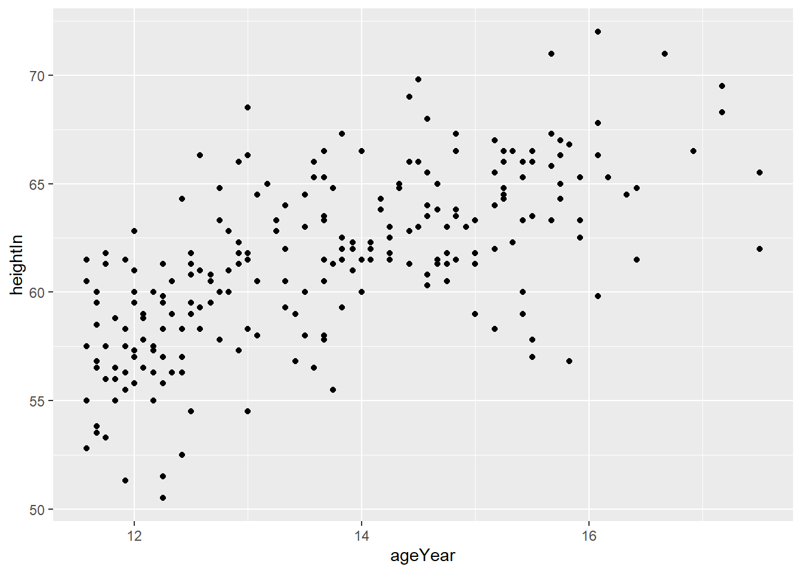

ggplot(heightweight, aes(x = ageYear, y = heightIn)) +geom_point(size =1.5)

基本散点图-修改散点大小
1.2 使用点形或颜色属性对数据点进行分组
将分组变量映射到点形（shape）或颜色（colour）属性。
接下来的例子中，我们将用到 heightweight 数据集中的3列。
# load packagelibrary(ggplot2)library(gcookbook) # 加载gcookbook是为了使用heightweight数据集library(dplyr)# 列出要用到的3列的标题heightweight %>%select(sex, ageYear, heightIn)#> sex ageYear heightIn#> 1 f 11.92 56.3#> 2 f 12.92 62.3#> 3 f 12.75 63.3#> ...<230 more rows>...#> 235 m 13.67 61.5#> 236 m 13.92 62.0#> 237 m 12.58 59.3ggplot(heightweight, aes(x = ageYear, y = heightIn,color = sex)) +geom_point()ggplot(heightweight, aes(x = ageYear, y = heightIn,shape = sex)) +geom_point()
sex ageYear heightIn
1 f 11.92 56.3
2 f 12.92 62.3
3 f 12.75 63.3
4 f 13.42 59.0
5 f 15.92 62.5
6 f 14.25 62.5
7 f 15.42 59.0
8 f 11.83 56.5
9 f 13.33 62.0
10 f 11.67 53.8
11 f 11.58 61.5
12 f 14.83 61.5
13 f 13.08 64.5
14 f 12.42 58.3
15 f 11.92 51.3
16 f 12.08 58.8
17 f 15.92 65.3
18 f 12.50 59.5
19 f 12.25 61.3
20 f 15.00 63.3
21 f 11.75 61.8
22 f 11.67 53.5
23 f 13.67 58.0
24 f 14.67 61.3
25 f 15.42 63.3
26 f 13.83 61.5
27 f 14.58 60.8
28 f 15.00 59.0
29 f 17.50 65.5
30 f 12.17 56.3
31 f 14.17 64.3
32 f 13.50 58.0
33 f 12.42 64.3
34 f 11.58 57.5
35 f 15.50 57.8
36 f 16.42 61.5
37 f 14.08 62.3
38 f 14.75 61.8
39 f 15.42 65.3
40 f 15.17 58.3
41 f 14.42 62.8
42 f 13.83 59.3
43 f 14.00 61.5
44 f 14.08 62.0
45 f 12.50 61.3
46 f 15.33 62.3
47 f 11.58 52.8
48 f 12.25 59.8
49 f 12.00 59.5
50 f 14.75 61.3
51 f 14.83 63.5
52 f 16.42 64.8
53 f 12.17 60.0
54 f 12.08 59.0
55 f 12.25 55.8
56 f 12.08 57.8
57 f 12.92 61.3
58 f 13.92 62.3
59 f 15.25 64.3
60 f 11.92 55.5
61 f 15.25 64.5
62 f 15.42 60.0
63 f 12.33 56.3
64 f 12.25 58.3
65 f 12.83 60.0
66 f 13.00 54.5
67 f 12.00 55.8
68 f 12.83 62.8
69 f 12.67 60.5
70 f 15.92 63.3
71 f 15.83 66.8
72 f 11.67 60.0
73 f 12.33 60.5
74 f 15.75 64.3
75 f 11.92 58.3
76 f 14.83 66.5
77 f 13.67 65.3
78 f 13.08 60.5
79 f 12.25 59.5
80 f 12.33 59.0
81 f 14.75 61.3
82 f 14.25 61.5
83 f 14.33 64.8
84 f 15.83 56.8
85 f 15.25 66.5
86 f 11.92 61.5
87 f 14.92 63.0
88 f 15.50 57.0
89 f 15.17 65.5
90 f 15.17 62.0
91 f 11.83 56.0
92 f 13.75 61.3
93 f 13.75 55.5
94 f 12.83 61.0
95 f 12.50 54.5
96 f 12.92 66.0
97 f 13.58 56.5
98 f 11.75 56.0
99 f 12.25 51.5
100 f 17.50 62.0
101 f 14.25 63.0
102 f 13.92 61.0
103 f 15.17 64.0
104 f 12.00 61.0
105 f 16.08 59.8
106 f 11.75 61.3
107 f 13.67 63.3
108 f 15.50 63.5
109 f 14.08 61.5
110 f 14.58 60.3
111 f 15.00 61.3
112 m 13.75 64.8
113 m 13.08 60.5
114 m 12.00 57.3
115 m 12.50 59.5
116 m 12.50 60.8
117 m 11.58 60.5
118 m 15.75 67.0
119 m 15.25 64.8
120 m 12.25 50.5
121 m 12.17 57.5
122 m 13.33 60.5
123 m 13.00 61.8
124 m 14.42 61.3
125 m 12.58 66.3
126 m 11.75 53.3
127 m 12.50 59.0
128 m 13.67 57.8
129 m 12.75 60.0
130 m 17.17 68.3
132 m 14.67 63.8
133 m 14.67 65.0
134 m 11.67 59.5
135 m 15.42 66.0
136 m 15.00 61.8
137 m 12.17 57.3
138 m 15.25 66.0
139 m 11.67 56.5
140 m 12.58 58.3
141 m 12.58 61.0
142 m 12.00 62.8
143 m 13.33 59.3
144 m 14.83 67.3
145 m 16.08 66.3
146 m 13.50 64.5
147 m 13.67 60.5
148 m 15.50 66.0
149 m 11.92 57.5
150 m 14.58 64.0
151 m 14.58 68.0
152 m 14.58 63.5
153 m 14.42 69.0
154 m 14.17 63.8
155 m 14.50 66.0
156 m 13.67 63.5
157 m 12.00 59.5
158 m 13.00 66.3
159 m 12.42 57.0
160 m 12.00 60.0
161 m 12.25 57.0
162 m 15.67 67.3
163 m 14.08 62.0
164 m 14.33 65.0
165 m 12.50 59.5
166 m 16.08 67.8
167 m 13.08 58.0
168 m 14.00 60.0
169 m 11.67 58.5
170 m 13.00 58.3
171 m 13.00 61.5
172 m 13.17 65.0
173 m 15.33 66.5
174 m 13.00 68.5
175 m 12.00 57.0
176 m 14.67 61.5
177 m 14.00 66.5
178 m 12.42 52.5
179 m 11.83 55.0
180 m 15.67 71.0
181 m 16.92 66.5
182 m 11.83 58.8
183 m 15.75 66.3
184 m 15.67 65.8
185 m 16.67 71.0
186 m 12.67 59.5
187 m 14.50 69.8
188 m 13.83 62.5
189 m 12.08 56.5
190 m 11.92 57.5
191 m 13.58 65.3
192 m 13.83 67.3
193 m 15.17 67.0
194 m 14.42 66.0
195 m 12.92 61.8
196 m 13.50 60.0
197 m 14.75 63.0
198 m 14.75 60.5
199 m 14.58 65.5
200 m 13.83 62.0
201 m 12.50 59.0
202 m 12.50 61.8
203 m 15.67 63.3
204 m 13.58 66.0
205 m 14.25 61.8
206 m 13.50 63.0
207 m 11.75 57.5
208 m 14.50 63.0
209 m 11.83 56.0
210 m 12.33 60.5
211 m 11.67 56.8
212 m 13.33 64.0
213 m 12.00 60.0
214 m 17.17 69.5
215 m 13.25 63.3
216 m 12.42 56.3
217 m 16.08 72.0
218 m 16.17 65.3
219 m 12.67 60.8
220 m 12.17 55.0
221 m 11.58 55.0
222 m 15.50 66.5
223 m 13.42 56.8
224 m 12.75 64.8
225 m 16.33 64.5
226 m 13.67 58.0
227 m 13.25 62.8
228 m 14.83 63.8
229 m 12.75 57.8
230 m 12.92 57.3
231 m 14.83 63.5
232 m 11.83 55.0
233 m 13.67 66.5
234 m 15.75 65.0
235 m 13.67 61.5
236 m 13.92 62.0
237 m 12.58 59.3